APPLYING INTELLIGENT
ROBOTS
TO OUR DAILY LIFE
엑스와이지는 인공지능 로봇 기술을 우리의 일상 속으로 가져오고 있습니다.
사용자 중심의 로봇기술,
로봇 무인화 솔루션
엑스와이지는 매일 방문하는 카페, 하루 중 많은 시간을 보내는 사무실과 같은 우리의 일상 영역에 적용 가능한 서비스 로봇 기술을 연구하고 시도합니다. 인공지능과 로봇 기술을 통해 사용자 중심의 제품과 서비스를 만들고, 책상이 아닌 사용자 접점에서 살아있는 기술을 누적합니다. 우리는 로봇 기술이 우리의 일상이 되기를 기대합니다.
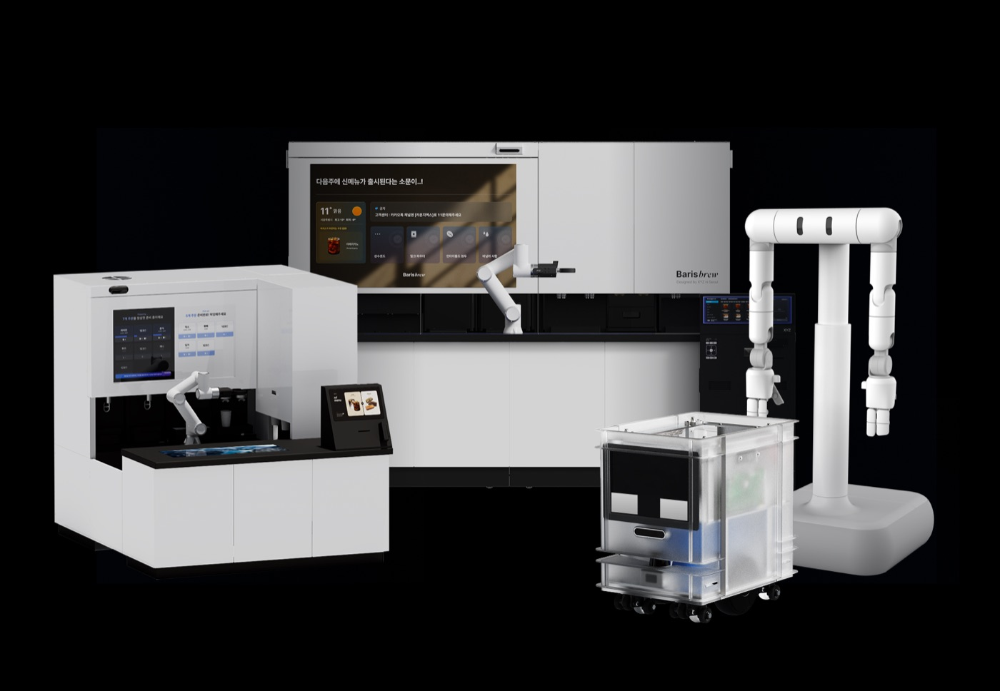
OUR VISION
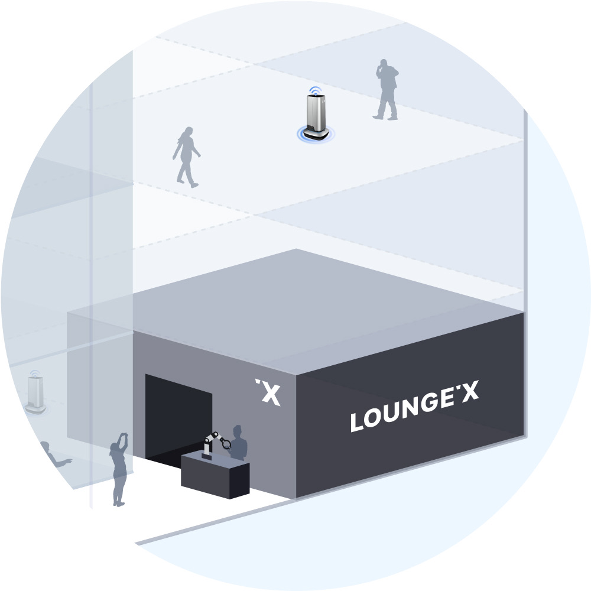
MAKE ROBOTS WORK,
PEOPLE REST
단순하게 반복되는 고된 업무는 이제 로봇에게 부탁하세요. 우리는 사람이 휴식할 수 있는 삶을 꿈꿉니다. 식음료 제조부터 딜리버리까지, 언제 어디서나 균일한 서비스를 제공하는 엑스와이지의 자동화 솔루션은 다가오는 미래의 노동 환경을 더욱 효율적으로 만들어 줍니다. 로봇은 우리의 삶이 사람에게 어울리는 창의적인 미래가 될 수 있도록 가치를 더합니다.
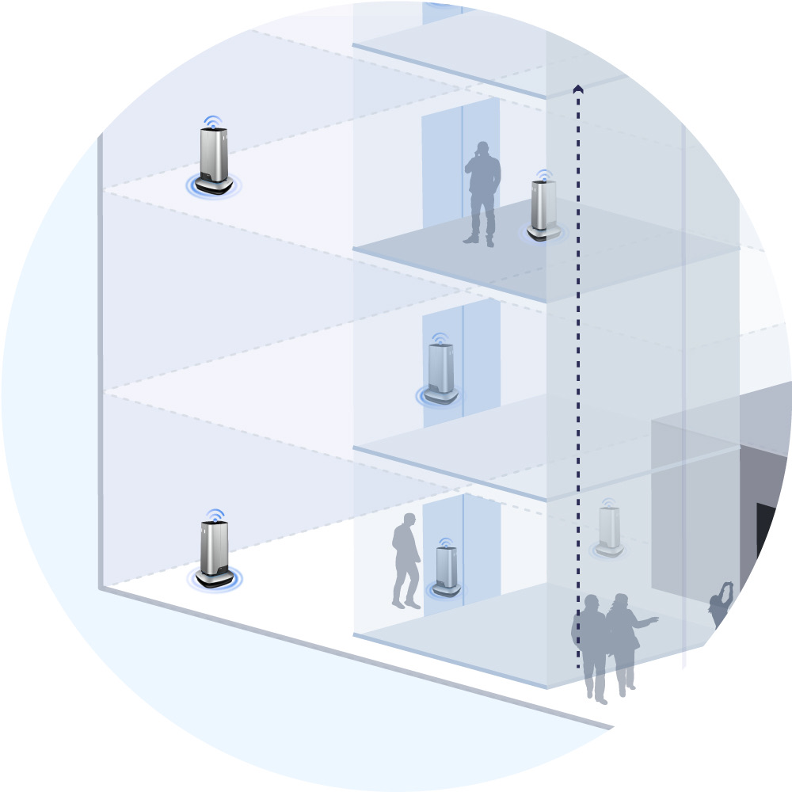
AUGMENT SPACE
WITH ROBOTS
물리적 공간은 한 평이지만, 서비스 공간은 건물 전체. 인공지능 기술로 주변환경을 인식하고 정확하게 판단하는 딜리버리 로봇이 X, Y축을 넘어서 Z축으로 움직이기 시작합니다. 서비스 자동화의 적용 범위를 건물 전체로 확장하는 로봇 빌딩 솔루션(RBS)은 공간의 가치를 물리적 크기 이상으로 증강시킵니다. 새로운 형태의 무인화 서비스 경험이 기존의 한계를 넘어 오프라인의 가능성을 확장합니다.
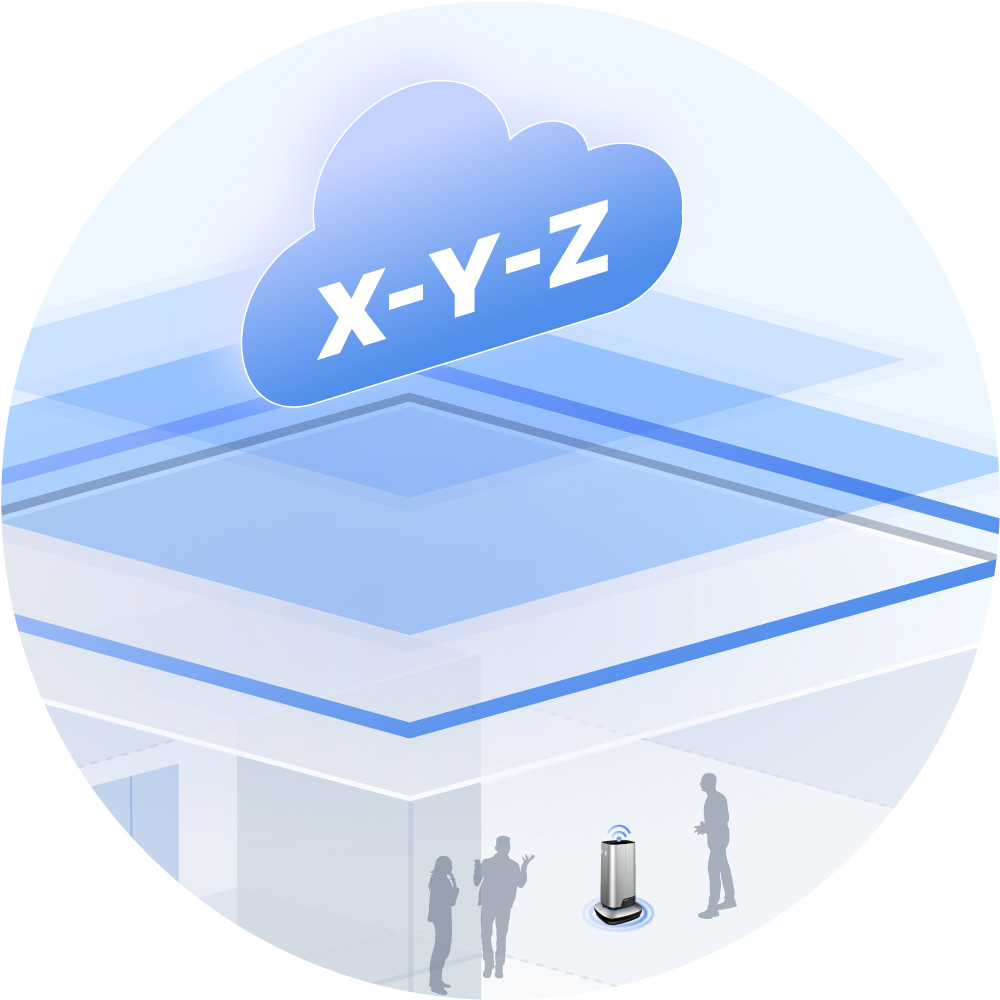
ROBOTS INTO
OUR DAILY LIFE
로봇이 건네는 인사 정도는 익숙해질 미래. 엑스와이지 로봇 서비스는 하나의 라이프스타일 속에 녹아들어 일상을 더욱 풍성하게 만들어줍니다. 모바일 주문, 식음료 제조 자동화, 제로 웨이팅 픽업, 인빌딩 딜리버리까지 다양한 종류의 로봇과 최첨단의 기술이 적용된 기능들이 하나의 흐름으로 연결됩니다. 모바일과 오프라인을 넘나들며 자연스럽게 이어지는 일상의 기술을 구현합니다.
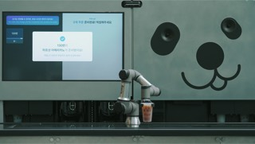
XYZ '바리스블루', 로봇 자동화로 연간 플라스틱 5.1톤 절감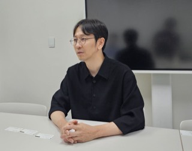
XYZ, '피지컬 AI 데이터 파이프라인' 구축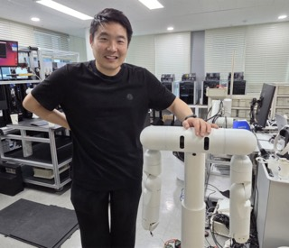
젠슨 황이 주목한 K-로봇… "가정용 휴머노이드 공개한다"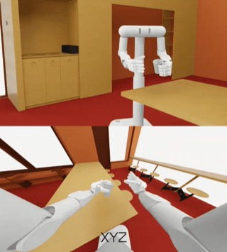
XYZ, 엔비디아와 손잡고 '피지컬 AI' 인재 양성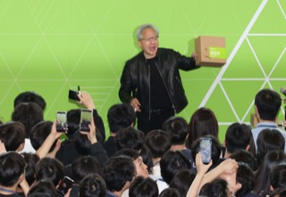
XYZ, 엔비디아와 AI 로봇 인재 육성 메디아나, '엔비디아 선정' XYZ와 의료 AI 협력… 플랫폼 확대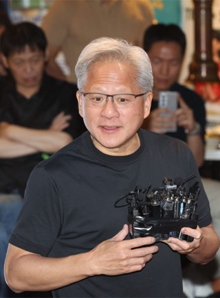
젠슨 황과 만난 K-로봇 스타트업… 에이로봇·XYZ 등 참가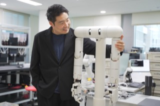
[봇규의 헬로BOT] 한 팔 '효율화' 다음은? 양팔 로봇이 직면한 협업 동작의 '실전성'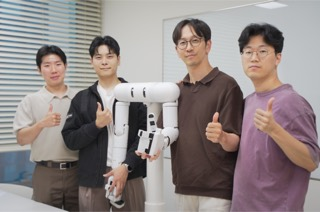
[봇규의 헬로BOT] 로봇이 현장에서는 갑자기 얌전해지는 이유… '행동지능'이 로봇의 가치를 가른다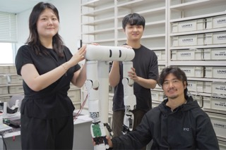
[봇규의 헬로BOT] "형태보다 현장"... 사람 곁에 놓이는 로봇 설계의 새로운 기준, '가상 검증'과 '실전 최적화'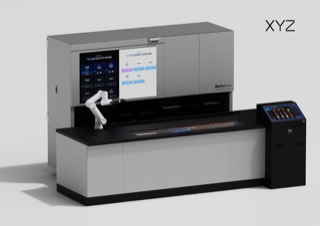
XYZ, 로봇 바리스타가 제조한 음료 누적 100만 잔 돌파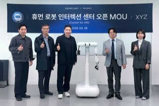
XYZ, 한양대학교와 손잡고 '휴먼-로봇 인터랙션' 연구거점 구축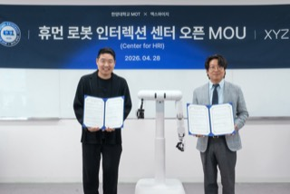
XYZ, 한양대학교 기술경영전문대학원과 '휴먼로봇인터랙션센터' 개소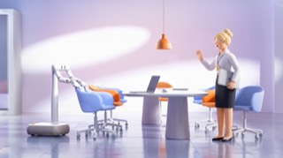
26/04/27 XYZ, 양팔형 로봇 '듀스' 공개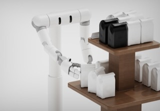
26/04/27 엑스와이지, 양팔형 세미 휴머노이드 로봇 ‘듀스’ 공개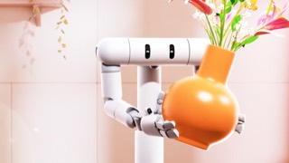
26/04/27 XYZ, 양팔형 로봇 '듀스' 공개… 글로브X 기반 학습 프레임워크 제시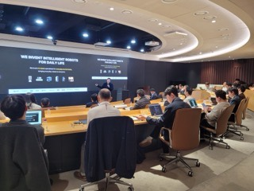
26/04/27 "사람과 가정·사무실에서 공존"... XYZ, 양팔형 로봇 '듀스' 공개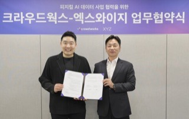
26/03/30 XYZ, 유진증권 '유망기업 설명회' 참가… 피지컬 AI 기반 사업 확대 전략 발표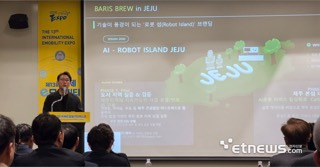
26/03/25 XYZ, 클라우드웍스와 협력… 피지컬 AI 데이터 고도화 26/03/24 "미래 친환경 모빌리티 기술을 조망하다"... IEVE 피치데스크 현장
26/03/24 "미래 친환경 모빌리티 기술을 조망하다"... IEVE 피치데스크 현장 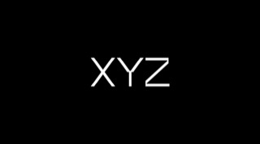
26/03/14 일할수록 똑똑해진다… 데이터의 금맥을 캐는 'K-로봇'에 130억 원 대규모 투자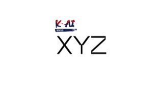
26/03/09 XYZ, 130억 원 규모 시리즈 B 투자 유치… 피지컬 AI 사업 가속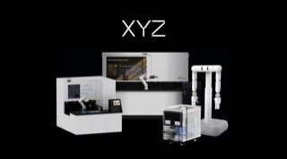
26/03/09 로봇 기업 XYZ, 시리즈 B 투자 유치 26/03/06 국제 e모빌리티 엑스포, 혁신상 29개사 발표… 50개국 참가로 글로벌 협력 확대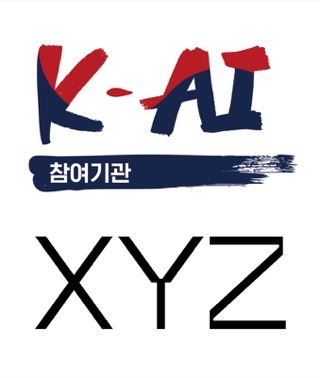
26/02/26 XYZ, '독자 AI 파운데이션 모델' 국가과제 참여 26/02/08 한국 로봇 산업의 골든타임, 지능과 응용에서 답을 찾아야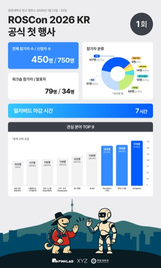
26/01/28 국내 ROS 생태계 확장의 신호탄… 첫 공식 'ROSCon Korea' 성황리 폐막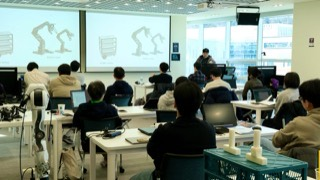
26/01/27 XYZ, 'ROSCon Korea 2026' 워크숍 참가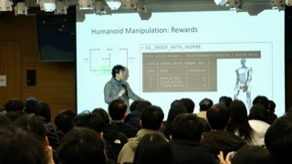
26/01/22 XYZ, ROSCon에서 로봇 개발 사례 발표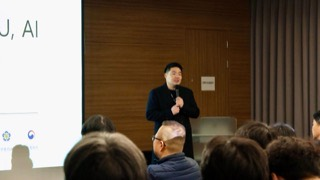
26/01/22 황성재 XYZ 대표, 'ROSCon Korea 2026' 환영사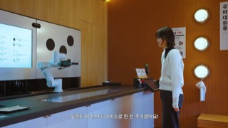
26/01/07 XYZ, 로봇 직원과 대화하며 주문하는 지능형 주문 방식 공개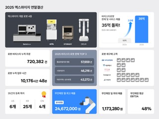
25/12/29 XYZ, 올해 로봇 상용화 성과로 경쟁력 입증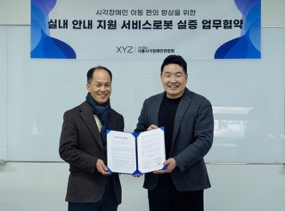
25/12/22 XYZ, 시각장애인연합회와 서비스로봇 실증 MOU 체결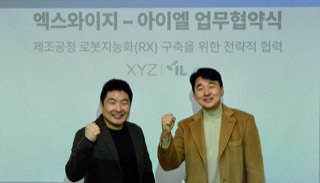
2025/12/11 XYZ-아이엘, 제조공정 로봇 전환을 위한 업무협약 체결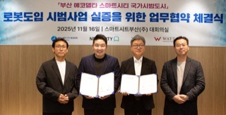
2025/11/25 스마트시티 분야에 진출한 XYZ, 부산 에코델타에 로봇카페 구축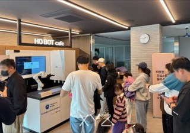
2025/11/18 XYZ, 부산 에코델타 스마트시티에 '바리스블루 X' 공급… 주거단지 최초 로봇 바리스타 공급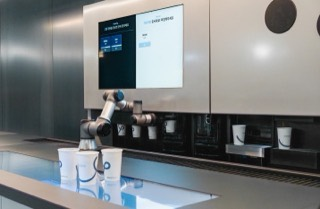
2025/11/17 XYZ "바리스타 로봇 '바리스블루' 구매가 꾸준히 증가"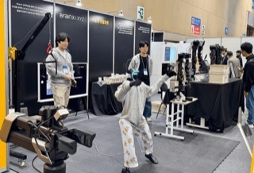
2025/11/07 XYZ, 로보월드에서 '로봇 지능' 시연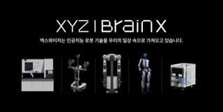
2025/11/03 XYZ, '로보월드 2025'에서 차세대 서비스 로봇 공개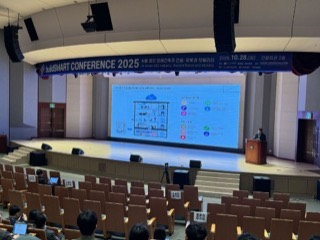
2025/10/28 황성재 XYZ 대표, '빌드 스마트 컨퍼런스' 기조연설 2025/10/27 엑스와이지, 맘스터치와 업무협약 체결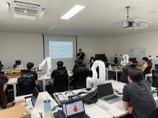
2025/10/22 XYZ, 생성형 AI 기반 휴머노이드 개발 시뮬레이션 교육 실시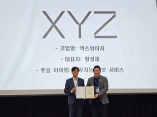
2025/10/10 엑스와이지, 서울시 주관 ‘2025 하이서울 기업’ 인증 획득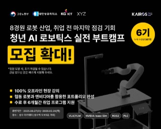
2025/08/19 ‘60조 달러 로봇 시장 겨냥’ 엑스와이지, AI 로봇 실전 전문가 키운다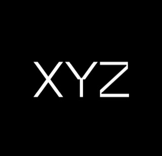
2025/8/4 엑스와이지, ‘K-휴머노이드 연합’ 최종 선정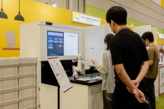
2025/7/16 “시간당 100잔”…엑스와이지, 차세대 AI 로봇 바리스타 공개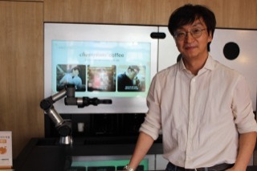
2025/7/4 [인터뷰] (주)엑스와이지, 카페 로봇을 넘어 공존형 AI 로봇에 도전하다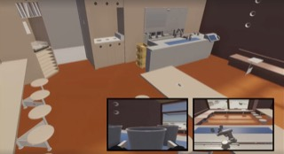
2025/7/4 엑스와이지, 실시간 모방학습 환경 '트윈엑스' 공개 2025/6/24 기업 AX 최종 완성은 '인간지능의 전환'…AI 교육 스타트업 뜬다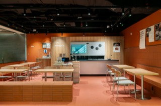
2025/6/23 엑스와이지 ‘원그로브몰’에 24시간 로봇카페 오픈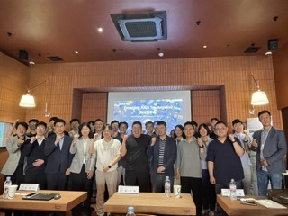
2025/6/14 [UP! START] 엑스와이지, 버티컬 AI 개발 가속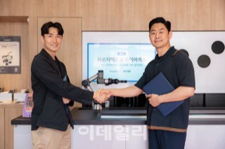
2025/6/4 라운지엑스-브라우니, 무인 로봇매장 운영 전략적 MOU 2025/5/26 '로봇 카페'가 교육사업 진출…"휴머노이드 제어 교육으로 확대" 2025/5/14 로봇도 렌털 전환 가속화...비용 부담 절감에 도입 확산 2025/5/2 [인터뷰] “오늘 힘내요” 말 건네는 바리스타 로봇, 사람을 위로한다 2025/3/31 서비스 로봇에 '피지컬 AI' 적용…엑스와이지-로보티즈 맞손 2025/3/22 사무실 내 자리까지 커피 배달…“음료 흘리면 닦으러 오네”[AI침투보고서] 2025/3/20 XYZ, 로보틱스 빌딩 구축 속도…10대 로봇 공급 2025/3/18 로봇·무인기기 구독…기업 'RX' 전성시대 2025/3/7 엑스와이지, 시대인재 기숙학원에 로봇 바리스타 '바리스브루' 도입 2025/2/27 "AI·로봇 융합형 인재 육성"…데이원컴퍼니, 엑스와이지와 '맞손' [영상]세상 hip한 로봇 회사에서 펼쳐지는 진검승부!인간VS로봇, 과연 최고의 바리스타는? I 바리스 브루 I XYZ I 미미미누 2024/12/17 엑스와이지, 고용노동부 장관상 수상 2024/12/5 로봇신문, '2024 올해의 대한민국 로봇기업' 32개사 발표 2024/12/3 푸드테크로봇협의회, ‘푸드테크의 현재와 미래’ 컨퍼런스 개최 2024/10/20 Consumer Attention to a Coffee Brewing Robot: An Eye-Tracking Study 2024/11/13 엑스와이지, 인간-로봇 상호작용 기술 경연 성료 2024/11/12 “AI와 함께 살아남자”…디지털 대전환 시대 스타트업 생존전략 2024/10/30 [에듀플러스]광운인공지능고, '2024 청소년 지능로봇 경진대회' 성황리 마무리 2024/10/27 로봇이 배달 담당...엑스와이지, '로봇친화 건물' 비전 공개 2024/10/25 [2024 로보월드]국제로봇콘테스트/R-비즈 챌린지, 25일 개막 2024/10/23 안전 등 로봇 핵심기술 개발… 스마트팩토리 수출 '일보 전진'[2024 로보월드] 2024/10/11 엑스와이지, 스마트라이프위크(SLW)서 ‘로봇 빌딩 솔루션’ 비전 알려... "초기 시장 선도할 기회 잡는다!" 2024/9/9 엑스와이지, 성수동서 첨단 로봇빌딩 꿈 키운다 2024/8/13 "홍대 창작가·여행객에 영감을"…바리스타 로봇 1년 사용기 2024/8/8 커피 제조에 배달도 척척…로봇이 일하는 성수동 [르포] 2024/8/2 엑스와이지, 인간-로봇 상호작용 기술 구현 대회 개최 2024/7/9 "로봇 친화 건물서 로봇 전문가 육성해요" 2024/7/7 [단독] 두산로보틱스, '맥주로봇' 만든다 2024/7/1 벤처기업협회, 벤처기업의 AI 전환 돕는 'AX브릿지위원회' 출범 2024/7/1 "시청에 로봇 바리스타가?" 서울시청 로봇 카페 외국인에 인기 2024/6/25 엑스와이지-고퀄, ‘건물 관제 통한 로봇 애플리케이션 개발’ MOU 2024/6/24 애드인에듀, AI로봇개발 전문기업 XYZ와 손잡고 인공지능 로봇개발자 양성 2024/6/4 엑스와이지, 무인 로봇카페 판매 호조…협동매장 넘어 2024/5/24 'K-푸드로봇으로 글로벌 시장 장악하자" 2024/5/17 위펀-엑스와이지, 무인카페 서비스 활성화 위해 MOU 체결 2024/5/13 엑스와이지, 호텔 로봇카페 확대 나서 2024/4/29 확 바뀐 시청 로비 찾은 오세훈 "방문객 환대에 초점 맞춰, 보람 느낀다" 2024/4/16 웍질부터 소믈리에 디켄딩까지...전문가 뺨치는 조리로봇 2024/4/8 아이스크림 로봇기기 살펴보는 최상목 부총리 2024/4/3 “카페 알바 대신 로봇 쓰세요”...엑스와이지, 솔루션 출시 2024/3/25 엑스와이지, 바리스타 챔피언 핸드드립 재현하는 커피로봇 출시 2024/3/16 바리스타 챔피언 모션 배운 로봇의 커피맛은? 2024/3/4 바리스타 로봇, 오피스 점령...층간 배달도 '척척' 2024/2/21 무인점포도 이젠 '품질 경쟁'…스타트업이 변화 이끈다 [스타트업 스트리트] 2024/1/24 식약처, 로봇 조리 자판기 등 식품 신산업 분야 규제혁신 추진 2023/12/21 제3회 코어 스타트업 어워즈 성료…전국부문 대상에 ‘(주)엑스와이지’ 2023/12/06 [아이포럼 2023] "인터넷, 모바일 다음은 로봇…AI 시대 핵심 인터페이스 될 것" 2023/12/05 로봇신문, '2023 올해의 대한민국 로봇기업' 30개사 선정, 발표 2023/11/23 '스타트업, 콘텐츠로 도약하다'...콘진원, 2023 KOCCA 데모데이 성료 2023/11/22 로봇 친화 빌딩 만드는 '엑스와이지'… "사람과 상호작용으로 공간가치 높일 것" 2023/11/20 WWF "11개 기업, 1년간 플라스틱 1만1000톤 감축" 2023/10/26 AI로 세상 깜짝 놀라게 할 차세대 유니콘 100곳 떴다 2023/10/16 엑스와이지 로봇카페 '라운지엑스', AMD와 협업 행사 진행 2023/09/20 DDP에선 로봇이 아이스크림 만들어 준다 2023/09/05 15년 경력 바리스타 김동진, 로봇카페 '라운지엑스' 대표 선임 2023/09/04 [인터뷰] “생활 속 불편함 해소하는 로봇 만든다”…엑스와이지 김병조 COO 2023/08/22 바리스타 로봇에 최초 리유저블 컵 시스템 도입 주목 2023/08/10 "서울은 진짜 현대적"... 실내서도 '한국의 멋' 제대로 즐긴 잼버리 대원들 2023/08/03 엑스와이지, 중기부 ‘아기유니콘 플러스’ 선정 2023/07/27 콘진원, '콘피니티 파트너스 데이' 개최.."대기업과 스타트업 협업" 2023/07/13 요리·용접·수술에 전기차 충전까지…고객 접점 늘리는 협동로봇 2023/07/13 ‘DDP 비더비’, 최신 기술 체험하는 복합문화공간으로 진화... “로봇이 만들어준 아이스크림과 커피 즐긴다” 2023/07/06 엑스와이지-광운대, 로보틱스 분야 인재 양성 한뜻 2023/06/28 서비스 로봇 스타트업 엑스와이지, IPO 추진 2023/06/04 “커피만 만드는 로봇?… 쏟으면 척척 닦기도 해야죠” 2023/09/19 엑스와이지, 세계자연기금(WWF)과 플라스틱 감축위한 PACT 공동 선언 [템터뷰] 엑스와이지 "로봇 '아리스' 아이스크림 1분만에 뚝딱" 엑스와이지, 아이스크림 로봇 '아리스 3.0' 공개 100억 투자받은 로봇 스타트업, 층간 이동 자율주행 배달로봇 공개 "엘리베이터 타고 커피배달"…엑스와이지, 자율주행 로봇 공개 서비스 로봇 스타트업 엑스와이지, 초소형 배달로봇 ‘스토리지' 공개 2023/08/22 푹푹찌는 늦여름 즐길 거리 '국립부산과학관'에 다 있다엑스와이지의 파트너로 함께하세요.
모바일 오더, 제조 자동화, 딜리버리까지. 최첨단 기술이 만드는 섬세한 서비스를 만나보세요.
다양한 서비스 공간 속 파트너사의 환경에 최적화된 로봇 무인화 솔루션을 안내해 드립니다.
솔루션 문의